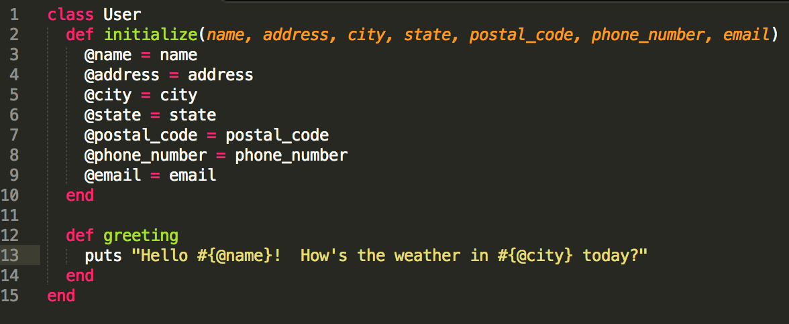

Ruby Classes
Posted on 5 July 2014 by Kyle Daugherty
Classes are the blue prints used to create objects in Ruby. They serve as a way to organize object behavior (methods) and attributes (data). Let's say we have an application that will have users (hopefully it will have users if we're lucky). Creating a new class is simple:
As you can see from the code above, to create a new class you just type class, followed by the class name in CamelCase form, and close it with the end keyword. This by itself would allow us to create new instances of the User class, although it would not be very useful. When you call the #new method on the class (example: user = User.new), Ruby will automatically call the #initialize method if one is available. The #initialize method is used for setting up each instance of the class and making it ready for use. Our users will most likely have the following attributes: name, address, city, state, postal code, phone number and an email. So, we can create the #initialize method that takes each of these as arguments.
In the above code, we're using instance variables (prefixed with @) and setting them equal to the value of each input. This is because each instance of this class will have its own unique name, address, phone number and email. We wouldn't want all users to share the same attributes. So now, we can create a new object of the User class as shown in the following code:

We can also create methods that will be available for use to any object of the class. These are called instance methods and can be defined as shown in the example below. As you can see, the instance variables we created in the #initialize method are available for use in the #greeting method. While local variables are only available inside the method they are defined, instance variables are shared across the entire object meaning it is bound to the specific instance of the class.
There you have it. While this post covers the basics, it really is that simple to create new classes in Ruby.